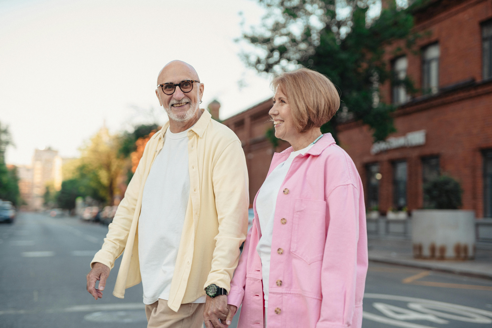
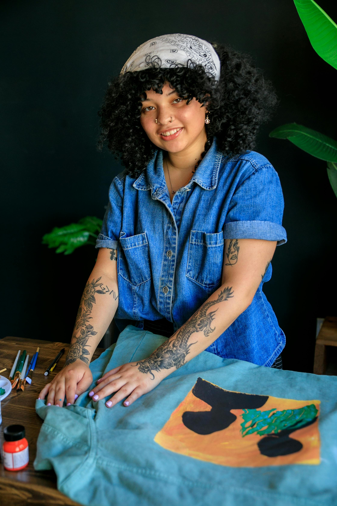
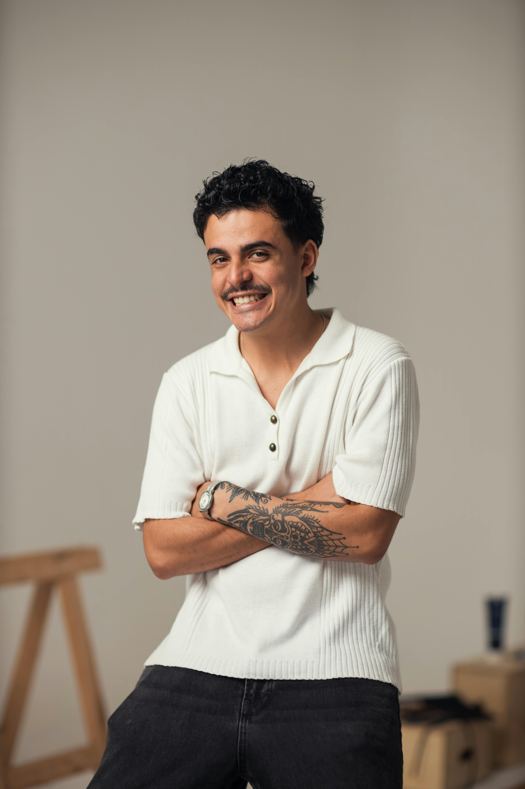
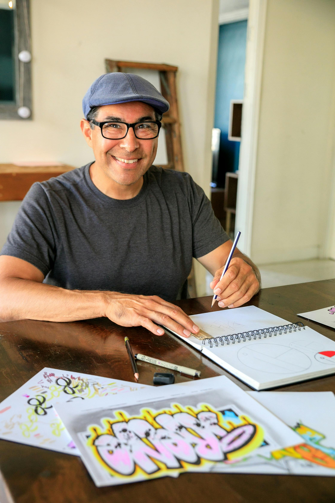
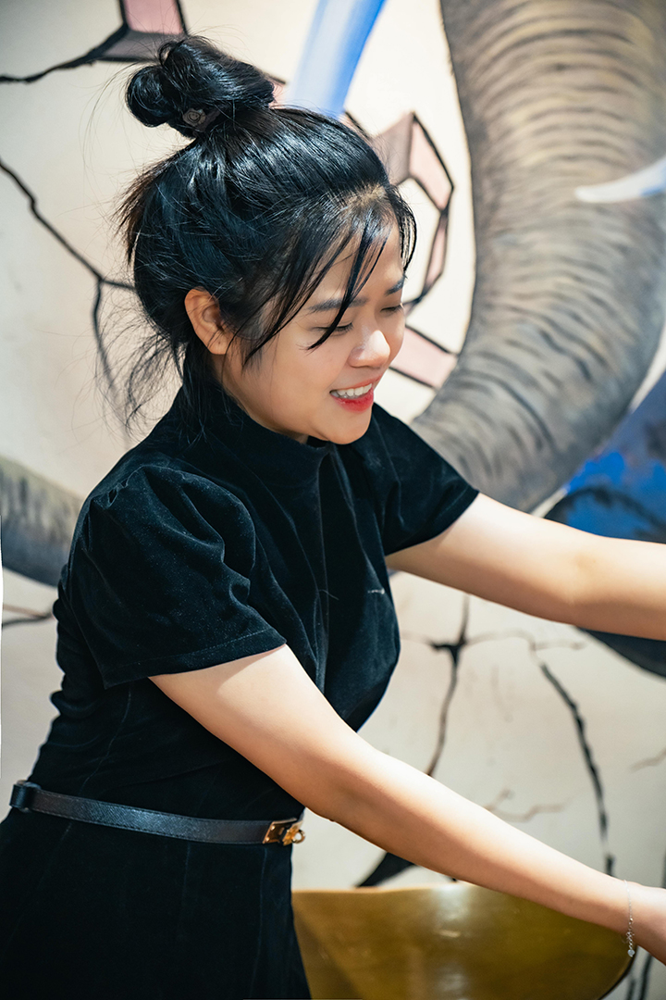
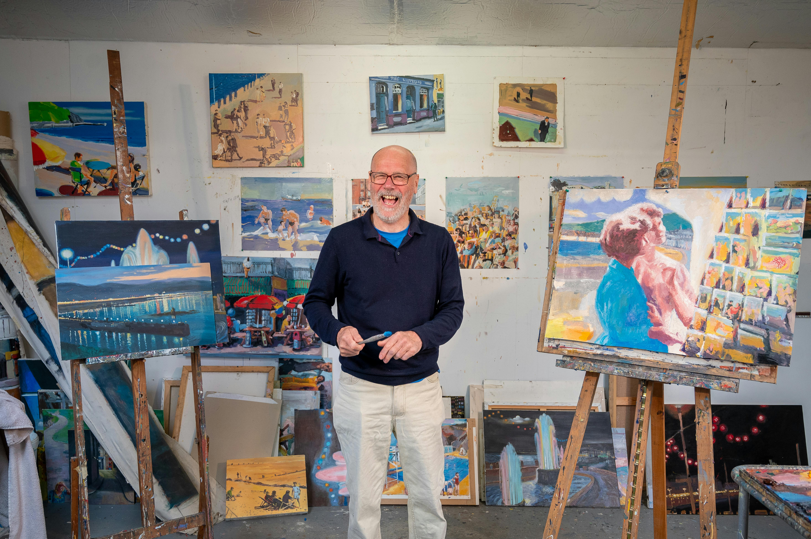
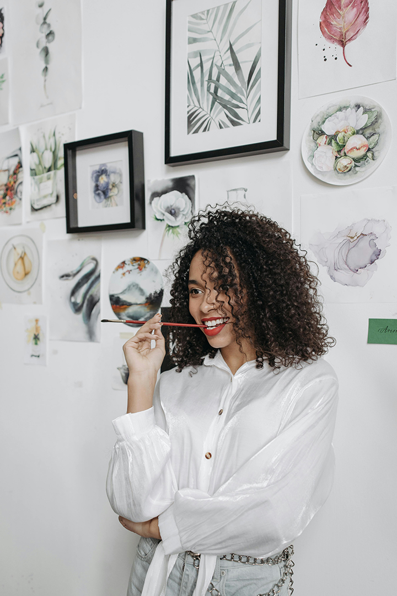

We believe art has the power to illuminate, challenge, and inspire. Our mission is to provide a space where diverse voices are represented, ideas are exchanged, and every visitor feels a sense of belonging.
Welcome to the Aurora Art Museum, a contemporary cultural hub dedicated to celebrating creativity, fostering dialogue, and connecting communities through the power of art. Founded in 1998, the museum has grown into one of the region’s most dynamic art spaces, offering a balance of local innovation and global perspectives.

Your generosity helps us grow. Explore ways to give through our Annual Fund, Corporate Sponsorship's, Planned Giving, or by volunteering.
Ways to give:
Annual Fund: Directly supports exhibitions and programs
Corporate Sponsorships: Partner with us for community impact Planned Giving: Leave a lasting legacy
Volunteer: Share your time and skills to help bring art to the public

Elena Marquez
Born in Madrid, Spain (1983), Elena Marquez is a multimedia artist whose practice investigates the interplay between perception, light, and material. She is best known for her large-scale installations that incorporate mirrors, glass, and projected video to create immersive environments. Her work invites audiences to question how light can both reveal and distort truth, often blurring the boundary between the real and the reflected. Marquez studied fine art at the Universidad Complutense de Madrid and later completed a Master of Fine Arts at the Royal College of Art in London. Over the past decade, her installations have been exhibited in major international venues, including Berlin’s Kunsthalle, the Museum of Contemporary Art in São Paulo, and the Palais de Tokyo in Paris. She has received numerous awards, including the International Installation Prize (2019).

Devon Chen
Devon Chen (b. 1990, Vancouver, Canada) is an artist working at the intersection of sculpture, digital media, and interactive technology. His practice is centered on the concept of “living light”—installations that respond to movement, sound, and time. By programming shifting light patterns through algorithmic design, Chen’s works transform static exhibition spaces into dynamic, ever-changing experiences. After studying computer engineering before turning to fine arts, Chen brings a uniquely technical perspective to his creative process. His projects often combine 3D-printed structures with projection mapping and responsive sensors. Chen’s recent interactive piece Prismatica was presented at the Venice Biennale’s emerging artists showcase (2022) and drew critical acclaim for its innovative fusion of technology and human engagement.

“Marcus Hal”
Marcus Hall (b. 1987, Aurora, USA) is a painter and muralist whose bold use of color and layered forms reflect the vibrancy of urban life. Hall is best known for his large-scale murals that celebrate community identity, featuring dynamic figures and patterns inspired by street culture, jazz, and the energy of city neighborhoods. Hall began his career as a graffiti artist before formally studying painting at the School of the Art Institute of Chicago. His work bridges these two worlds—bringing the immediacy and accessibility of street art into galleries while continuing to make public art accessible to all. His murals can be seen throughout downtown Aurora, transforming once-blank walls into landmarks of civic pride.

“Ayako Watanab”
Born in Kyoto, Japan (1975), Ayako Watanabe works across painting, installation, and traditional Japanese media to explore the aesthetics of shadow and silence. Influenced by the philosophy of “ma”—the Japanese concept of negative space—her installations often combine ink painting with carefully choreographed light sources to evoke memory, absence, and impermanence. Watanabe studied Nihonga (traditional Japanese painting) at Kyoto City University of Arts before moving to Tokyo to pursue contemporary installation art. Her early exhibitions gained attention for blending centuries-old artistic traditions with minimal, modern forms. Her work has since been exhibited at the National Museum of Modern Art, Tokyo, as well as international venues in New York, Paris, and Seoul.

“Caleb Nguyen
Caleb Nguyen (b. 1992, Aurora, USA) is a photographer whose black-and-white portraits explore themes of identity, belonging, and memory. His images often focus on quiet, intimate moments that reveal the complexity of human experience, from fleeting expressions to overlooked details of daily life. Nguyen studied photography at Columbia College Chicago, where he developed his interest in portraiture as a means of storytelling. His ongoing series Ordinary Light captures members of the Aurora community in unguarded moments, celebrating the subtle beauty found in everyday lives.

“Sofia Ramirez”
Born and raised in Aurora (1996), Sofia Ramirez is a mixed-media artist whose work is rooted in themes of memory, migration, and cultural identity. She creates assemblages from found objects, textiles, and photographs—transforming everyday materials into richly layered narratives. Ramirez earned her Bachelor of Fine Arts at the University of Illinois, where she began experimenting with recycled materials as a way of preserving family history. Her work often incorporates fabric scraps from her grandmother’s sewing projects, handwritten letters, or fragments of personal photographs, weaving together past and present.